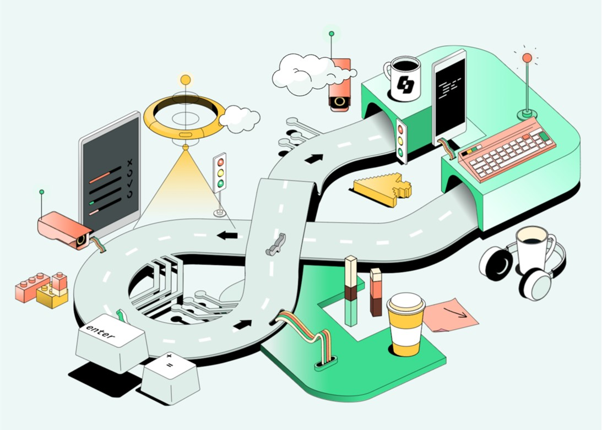

Mis Proyectos



- Automatización sobre página de retail.
- Implementación de suite de Pruebas.
- Elaboración de reporte de bugs.
- Construcción de casos de prueba.
- Análisis Funcional.
Tecnologías aplicadas
- Automatización sobre página de gestion de RRHH.
- Implementación de test unitarios.
- BDD: Integración con Cucumber.
- Construcción de casos de prueba.
Tecnologías aplicadas